← Back to projects
Hand-Gesture-Controlled Robot for Environmental Surveying
A differential-drive mobile robot controlled through wearable IMUs, with a head-tracked camera gimbal and onboard environmental sensing for remote surveying tasks.
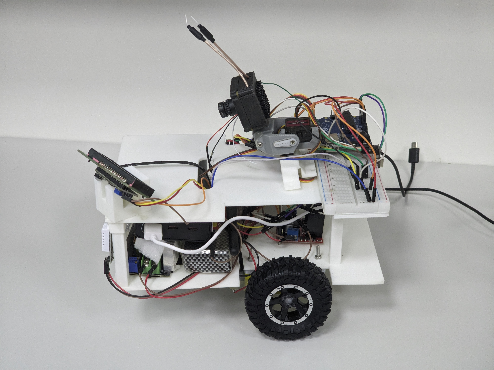
Project Overview
The project combined wearable motion input, mobile-robot control, camera viewing, and environmental sensing in one integrated prototype. The available media documents the robot platform, wearable controller, electronics, testing process, and final demonstrations.
- Differential-drive mobile robot platform
- Wearable IMU-based hand-gesture control
- Head-tracked camera gimbal
- Onboard environmental sensing
- Integrated electronics, fabrication, and system testing
Prototype and Integration
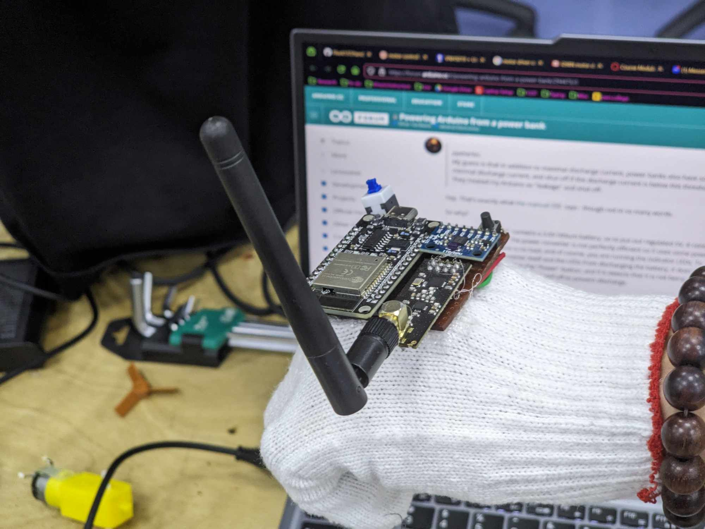
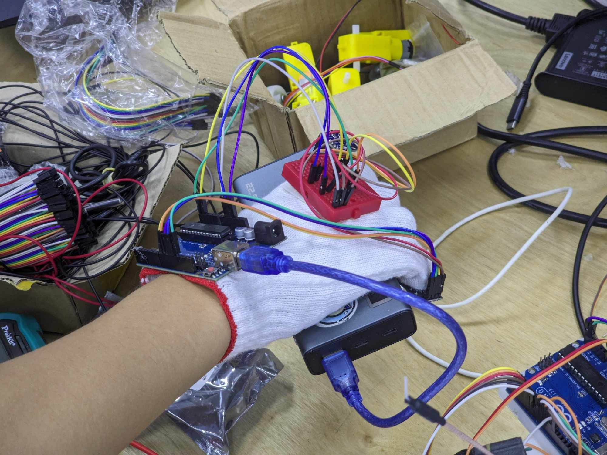
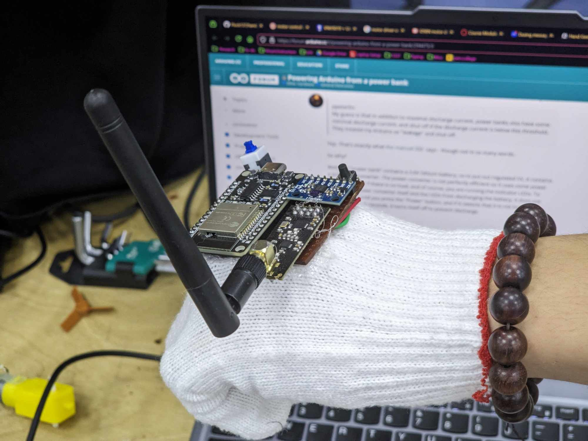
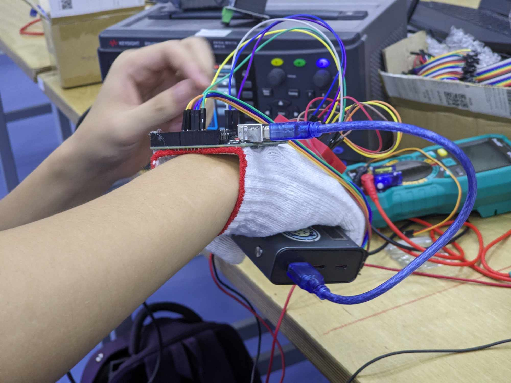
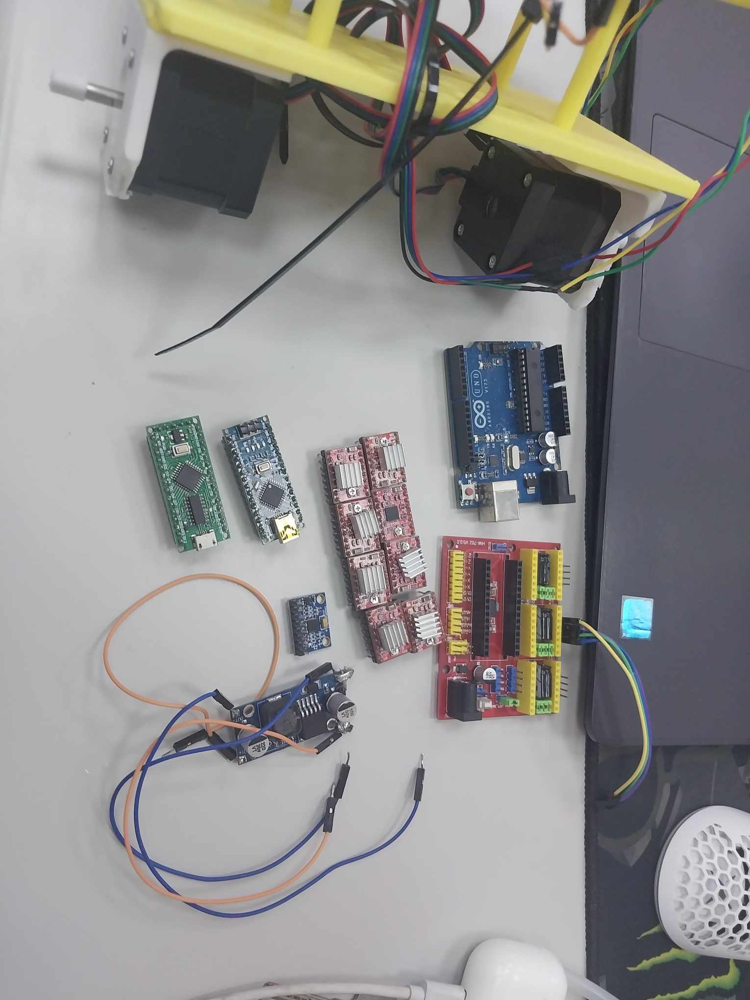
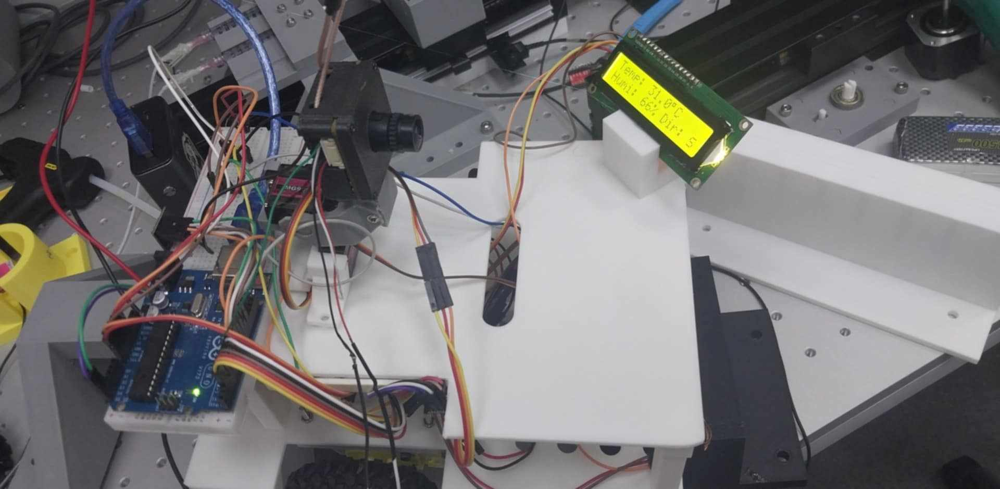
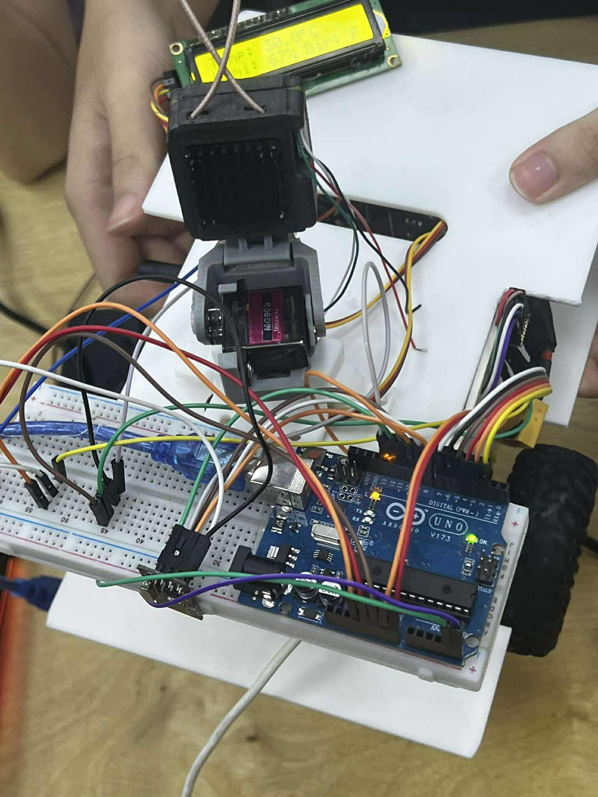
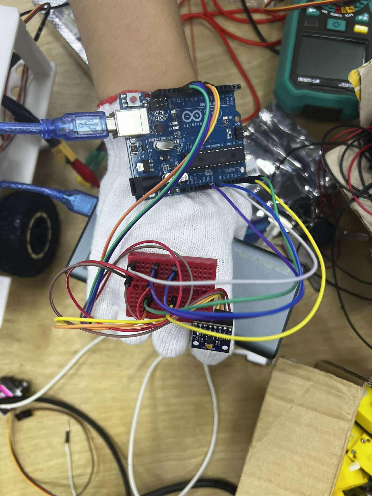
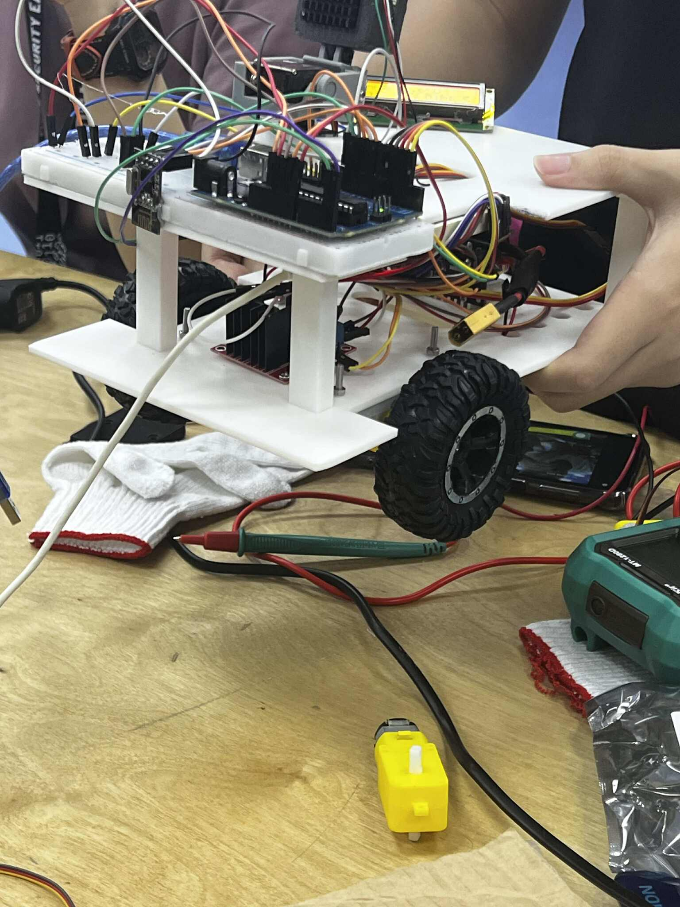
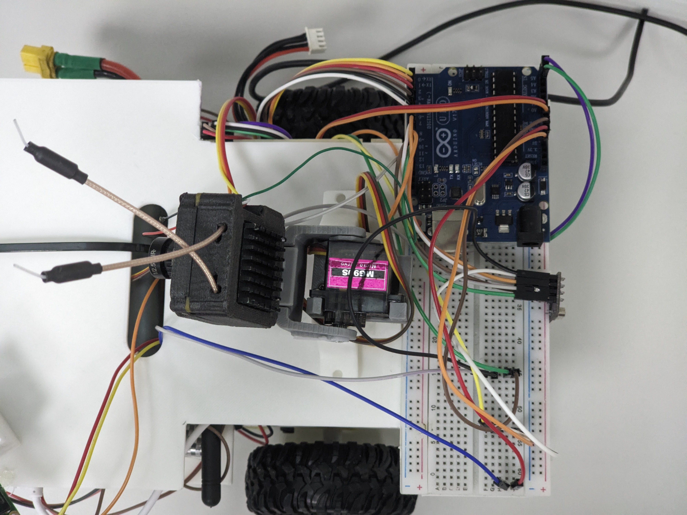